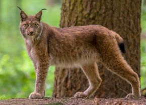
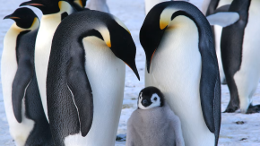

| Amazing Animals of the World | |||||
|---|---|---|---|---|---|
| Image | Name | Continent | Habitat | Diet | Interesting Fact |
|
Amur Leopard Panthera pardus orientalis |
Asia | Temperate rain forests in the Russian Far East and parts of China | Carnivore - deer, hares, small mammals | Fewer than 120 are left in the wild, making it one of the rarest big cats on Earth. | |
|  | Eurasian Lynx Lynx lynx |
Europe (and parts of asia) | Boreal and temperate forests | The Eurasian lynx is the largest of the lynx species and is slowly returning to parts of Europe due to rewilding efforts. | |
|
Axolotl Ambystoma mexicanum |
North America | Freshwater lakes and canals (mainly Lake Xochimilco, Mexico) | Carnivore - worms, insects, small fish | Axolotls have the unique adaptation of regenerating entire limbs, parts of their heart, spinal cord, and even parts of their brain. This makes them a key subject in regeneration research. | |
|
Platypus Ornithorhynchus anatinus |
Australia | Freshwater rivers and streams | The platypus is one of only mammals that lay eggs, and males are known to have venomous spurs on their hind. | ||
| Meerkat Suricata suricatta |
Africa | Arid savannas and deserts (Kalahari, Namib) | Omnivore - insects, lizards, eggs, plants | Meerkats live in complex social groups and take turns acting as sentinels, standing guard for predators. | |
|
Capybara Hydrochoerus hydrochaeris |
South America | Wetlands, marshes, and riverbanks | Herbivore - grasses, aquatic plants, fruit | The capybara is the world’s largest rodent and is highly social, often seen in groups of 10-20. | |
|  |
Emperor Penguin Aptenodytes forsteri |
Antarctica | Coastal ice and surrounding ocean | Carnivore - fish, krill, squid | Emperor penguins endure the harshest breeding conditions of any bird, with males incubating eggs in -60 degrees Celsius winds for two months without eating. |